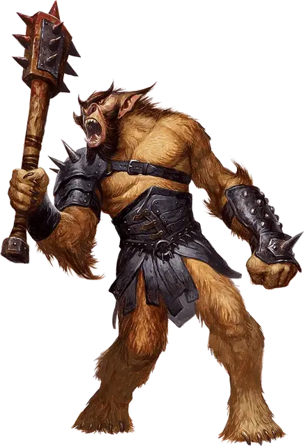

Багбир
Bugbear
Средний Гуманоид (Гоблиноид), хаотично-злой

Класс Доспеха 16 (шкурный доспех, щит)
Хиты 27 (5к8 + 5)
Скорость 30 футов
| мод | спас | ||
|---|---|---|---|
| СИЛ | 15 | +2 | +2 |
| ЛОВ | 14 | +2 | +2 |
| ТЕЛ | 13 | +1 | +1 |
| мод | спас | ||
|---|---|---|---|
| ИНТ | 8 | −1 | −1 |
| МДР | 11 | +0 | +0 |
| ХАР | 9 | −1 | −1 |
Навыки Выживание +2, Скрытность +6
Чувства тёмное зрение 60 футов, пассивное Восприятие 10
Языки Общий, Гоблинский
Опасность 1 (200 опыта)
Бонус мастерства +2
Среда обитания Лес, Луг, Подземье
Особенности
Жестокость. Когда багбир попадает атакой рукопашным оружием, атака причиняет цели одну дополнительную кость урона оружия (учтено ниже).
Внезапная атака. Если багбир застаёт врасплох существо и попадает по нему атакой в первом раунде сражения, цель дополнительно получает от атаки 7 (2к6) урона.
Действия
Моргенштерн. Рукопашная атака оружием: +4 к попаданию, досягаемость 5 футов, одна цель. Попадание: 11 (2к8 + 2) колющего урона.
Метательное копье. Рукопашная или дальнобойная атака оружием: +4 к попаданию, досягаемость 5 футов или дистанция 30 футов/120 футов, одна цель. Попадание: 5 (1к6 + 2) колющего урона от дальнобойной атаки или 9 (2к6 + 2) колющего урона от рукопашной атаки.
Описание
Багбиры рождены для битвы и хаоса. Выживая набегами и охотой, они запугивают слабых и подавляют их, но при этом они готовы сражаться на стороне сильных вождей, если это сулит им кровопролитие и сокровища.
См. дополнительно статью: "Бестиарий: Багбиры"